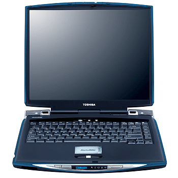

Linux on Toshiba Satellite 5100-501 / Satellite 5105-S607
rob miller -- rob at inpharmatica dot co dot uk
October 2002

Contents
-
Disclaimer: Not me, guv...
-
Overview: What works, what doesn't, what I haven't tried
-
Hardware Specs: Details of the 5100-501
-
Software Specs: Debian 3 (Woody), 2.4.18, XFree86 4.1.0
-
Display: 1600x1200 Nvidia X server, 1280x1024 framebuffer console, TV out, CRT out
-
Keyboard & Mouse: Minor details (sorry, no LCD yet...)
-
Sound: Alsa, intel ICH3
-
Toshiba modules / ACPI: Motivation, kernel patch, Toshiba extras
-
DVD/CD/CDRW: Making each work
-
Disk Drives: USB floppy, hard disk to full speed
-
Connecting Up: Ethernet, PCMCIA, IrDA (SIR), [Belkin USB-serial]
-
Kernel: Review in case I missed anything
-
Linux Installation: Getting loaded the first time
-
Windows XP partition: Just leave it.
-
Likes: Yes, I'd buy one again
-
Dislikes: Grrrrr....
-
Still Working On: cPad display
-
Files: Configuration examples
-
Links: Other info, other sites
Disclaimer
This is my best effort at documenting what I've done to get Linux running on my Toshiba Satellite 5100-501.
What you do with the information, which may include errors, is fully your own responsibility.
I assume you have basic Linux skills including the ability to configure, build and install your own kernel.
Furthermore, my effort here is to supply information, not a turnkey solution for your system -- you may actually
have to look at the configuration and other files I have supplied. The files here have
generally not been cleaned up.
Use at your own risk. All trademarks are the property of their respective owners.
Overview
Things I've got working: faster hard disk, ACPI + some Toshiba extras, ethernet,
1280x1024 framebuffer, 1600x1200 X windows, TV out, RGB out, DVD/CDRW, sound,
SIR IrDA (issues), PCMCIA CF, 'Toshiba' and 'Internet' buttons, middle mouse button,
serial (with a Belkin USB-serial).
Things that don't yet work: power management suspend, trickery with the sub-lcds.
Things I haven't tried yet: bluetooth, FIR IrDA, S/P DIF, SD or SmartMedia cards, winmodem,
1394 Firewire.
Hardware Specs
This document from Toshiba describes the overall specification of the 5105-S607, which I believe
to be the US version of the 5100-501 (without Bluetooth or the 'Treasure Island' price).
Here's my dmesg output and lspci -vv output for your perusal.
Note that the IDE controller is not actually the Intel PIIX4 as reported by dmesg (or in the kernel config),
it should be the 82801CAM -- but this needs a 2.5 kernel.
The main points of interest for me are:
- Pentium 4, 1.7Ghz, 512mb SDRAM
- 1600x1200 (UXGA) display, Nvidia NV17 GeForce4 440 Go controller with 32mb DDR RAM
- 40 Gb hard disk, ATA100 5400 rpm Toshiba MK4019GAX (not the GAP model as reported in a UK review)
- DVD/CD/CDRW combo drive, Toshiba SD-R2102
- cPad trackpad with 3 mouse buttons
Geeks like me may also care about:
- Intel 82845 AGP bridge
- Intel 82801 CA/CAM interface controller used for:
- UHCI USB hub
- SMSC LPC47N227 SuperIO chip on LPC interface (apparently only IrDA is used)
- IDE U100 disk interface
- AC'97 Audio controller (i810 chipset)
- AC'97 Modem (Toshiba)
- EtherExpress PRO/100 VE ethernet
- ToPIC95 Toshiba Cardbus bridge (PCMCIA for us oldies)
- TI TSB43AB22 Firewire (IEEE 1394) controller
See the dmesg and lspci -vv output for more info.
Software Specs
Information on this web page is based on the following configuration:
I recommend nothing less.
Display
(update 21 Aug 02)
I don't think there is a UXGA (1600x1200) server option for this system other than the server from
Nvidia. The drawbacks are that this 'taints'
the kernel with a non-GPL module, that -currently- there is no power management support
(so suspend/resume breaks right here), and that it won't work with the 2.5 kernels. On the positive side,
TwinView (for TV and RGB output) and the framebuffer interaction works, plus it's fast and pretty.
Here's my XF86Config-4 file. In addition to the more technical features, I've
set the 'NoLogo' option to skip the Nvidia splash screen and set 'DigitalVibrance' to 2 (range is 0-4).
Check out the Nvidia README to
learn more options.
TV out: The config file above is set up to display on both the TV and LCD panel at 800x600 when/if
you (re)start the X server with the TV output connected. TV sound works as well. J. Belmonte's next release
should support TV out as a video option through the /proc/acpi/toshiba interface.
RGB out: RGB output is a little trickier (or really simple -- just reboot with the monitor plugged in).
To have software control, you need to install John Belmonte's
Toshiba Extras ACPI module kernel patch. Switching
puts the console on the external monitor as well
as the X server, however the default setup above has TwinView using 800x600 when enabled. To get the full
resolution, you need to select the second ServerLayout by starting with "startx -- -layout CRT". You can switch
the XF86Config-4 file ServerLayout sections around so that the RGB TwinView is the default rather than the TV support
and thus use xdm, but that's left as an exercise to the reader (see the comments in the file). As noted on J.
Belmonte's pages, you should go to the console, switch LCD/CRT, and then go back to X. Sometimes doing this I get
to a state where the LCD panel can't sync on the console framebuffer, but no big deal as the external monitor is there
after all.
Framebuffer: Compile the VESA framebuffer into the kernel, and put vga=0x31a (1280x1024 at 16 bits color)
into your lilo.conf. See the
framebuffer howto. You may need to convert that to a decimal value for older lilo's.
I think you also need the XF86Config-4 file's Frame Buffer section in order to
switch between X and the console. No, TV out (at least to my TV :-) won't handle the 1280x1024 framebuffer, I just go back to
vga=extended.
Extra thanks to macemoneta on the Compuserve Toshiba list for supplying his XF86Config-4 file, which was the basis
for most of this.
If you do need to switch around between console and X while using the CRT or TV out, my findings are that you need
to re-start X with the alternate video already plugged in. Presumably this is because the Nvidia driver will be accessing the
graphics chip directly, independent of the Toshiba BIOS (HCI) commands used by the /proc/acpi interface.
Keyboard & Mouse
There's an annoying key repeat problem under X windows, my solution is to use 'xkbset' as well as a
special keymap (Xmodmap) to enable the 'windows' and 'menu' keys for use as extra mousebuttons.
Ben Lynn's site explains that the spurious keypresses
have the characteristic that the keyrelease is immediate, thus we can use an XKB preference called 'SlowKeys' to
allow only keypresses that last a minimum length of time. Another XKB preference disables the bell that this setting
enables. Next, one requires software to work with the XKB API and manage these features; I use
xkbset
by Stephen Montgomery-Smith (also in Debian unstable).
Under Debian, I place this script in /etc/X11/Xsession.d to implement the key fix for
all users (and - I think - the xdm login) as well as load my Xmodmap file.
The mouse is USB, thus the 'USB Human Interface Device (full HID) support' is recommended, and see the
XF86Config-4 file for the protocol. I haven't made any effort to set up gpm thus far.
If you load my cPad driver module, you can get the middle mouse button working (and won't need
the hid module above). See
John Belmonte's toshiba_acpi work to use/access the 'Toshiba'
and 'internet' buttons next to the power button.
Sound
Sound options are either the i810 code that comes with the kernel distribution, or the Advanced Linux
Sound Architecture (ALSA) software distribution. Here's some random
hints which may be useful either way:
- The Xine DVD player needs ALSA
- I've read that you need the ACPI patch to get sound working on
this system -- I can't confirm that, but I do use the patch.
- On at least two occasions I achieved a state in which sound was not working and then began to work after booting
into WindowsXP. One of these was after the battery had run down completely. Possibly WXP initialises something that
the Linux side does not, however I've not seen this happen for some time.
- If you build ALSA from source, the mixer levels are set to '0' and muted by default. Run alsamixer, use the arrow keys
to adjust the levels (resolution is a function of the window you run in), use the 'm' key control muting. Here's my
/etc/asound.state file to try if you can't work out what needs to be enabled to get some noise out.
- If you go with the Debian binaries, I found the default sound levels to be set too high (in the red), causing distortion.
- If you want both the kernel and the ALSA options, modularise the kernel drivers. You must build both 'Sound Card Support'
and 'Intel ICH (i8xx) audio support' as modules. If you don't build 'Sound card support' as a module, you'll see the error
"alsamixer: function snd_ctl_open failed for default: No such file or directory" when you try to set sound levels with alsamixer.
- If you build ALSA from source, start with
"./configure --with-sequencer=yes --with-oss=yes --with-cards=intel8x0" as suggested
by Nicolas Beaulieu.
Toshiba modules / ACPI
(update 21 Aug 02)
As noted above, I'm using the 20020709 ACPI patch. The benefits are
at least some of the following:
- ALSA (sound) works
- pressing the 'power' button for less than 4 seconds halts the system nicely
- /proc/acpi contains a subdirectory with CPU temperature in celsius rather than kelvin (read by a KDE app called aKpi).
Also as noted above, I'm using John Belmonte's Toshiba Extras kernel
patch/module, which is based on the work of Jonathan Buzzard.
John B. should have a new release out soon which works more easily against an
ACPI-patched 2.4 kernel than what I described here previously. The benefits here are (will be):
- fan control
- LCD brightness control
- enable console on external RGB monitor
- enable console TV out
- enable sysevent fifo to see 'toshiba' and 'internet' buttons
There's also the Jonathan Buzzard toshiba.o module (toshutils) already in the
kernel source tree, this will only work if you exclude all the ACPI code from the kernel. In this case, load the module
with the option "tosh_fn=0x62" to get the hotkeys (function keys) working. Alternatively, and still subject to the ACPI problem
as far as I know, try Charles Schwieters' toshset utility (works without
toshiba.o). I have heard that the problem with ACPI is not present in the 2.5 kernels.
At one time I added the patch to enable swsusp in the
2.4 kernel (it's been accepted into 2.5). This is a fully Linux solution to suspending to the disk swap partition, and worked very
well -- except that the Nvidia X server doesn't appear to support any sort of power management commands, so my goal of being able to
resume where I'd left off was trashed. There was also some problem with the Intel e100 ethernet driver, but I didn't look into it
once I realised that this wouldn't cut it.
If you surf about the web for Linux ACPI you'll find that there's still a bit of work remaining to be done. Hopefully in 2.6!
DVD/CD/CDRW
- DVD: The main trick here is to build the kernel with the UDF file system (module is fine). Beyond this, I was using
the Xine DVD player (needs ALSA) with the DivX codec, but now (14 Aug 02) I also use
Ogle for ease of set-up for things I didn't have working with xine.
Note I link /dev/dvd to /dev/scd0. Check out
NB's page for more on both players. I don't yet have the
TOSLINK to optical minijack adapter to try the S/P DIF (Dolby digital AC-3) output, but the ALSA docs indicate that it isn't
supported for this chipset.
- CDRW: This is just as described in the CD-Writing howto, you need to enable SCSI emulation, SCSI CDROM, and the CDROM
filesystem(s) in the kernel (modules ok), then append "hdc=ide-scsi" in your lilo.conf.
Disk Drives
- floppy disk: this is another USB device, enable "USB Mass Storage support" and "SCSI disk support" in the kernel, then the
device on my system is /dev/sda0 (see my /etc/fstab sampling).
- hard disk: (update 14 Aug 02) enable 'use PCI DMA by default when available' in the kernel, this seems to do away with
the need for either the hdparm script or the lilo options (ide0=dma).
I use and recommend the ext3 filesystem.
Connecting Up
Except for the ethernet, this section is all about connecting up to my TRGpro (essentially a Palm IIIxe with Compact Flash).
- ethernet: the kernel 'EtherExpressPro/100 support' has only worked for me when compiled into the kernel (not as a module),
but I only worked that out long after I switched to using the
Intel e100 driver.
Under 2.4 (not 2.2) kernels the 'beat detection' works, so programs like Debian's laptop-net respond to plugging in the cable.
- PCMCIA: The kernel-based PCMCIA didn't work for my CF card, so I continue to use the external PCMCIA code, current
version 3.1.34.
- IrDA SIR: "X Windows, PCMCIA CF, IrDA SIR -- choose any two." Try my IrDA instructions to
initialise the 82801CAM and SMSC 47N227 chips as a serial COM port and use with pilot-link for Palm IR file transfers. The 47N227 works with the 'SMC IrCC' kernel driver. Unfortunately,
with the 2.4 kernel this only seems to work on irq 3 -- and this is needed for the PCMCIA IDE support to see the Compact Flash
card as a disk (a cheap adapter allows you to plug CF into PCMCIA slots). The 2.5 kernels have the correct support for the
82801CAM chip to pile all the PCI interrupts together -- so this should no longer be a problem -- but the Nvidia X server won't
compile or install with a 2.5 kernel. Guess that's another feature for 2.6...
- serial: so I got a used Belkin USB-serial converter (for £12!) and went back to using the cradle for "quick" pilot-link
Palm file installs.
I only mention it here because I had to work out that the thing to do is add a script containing "stty -F /dev/ttyUSB0 57600"
to be called as a "post-install" for the belkin_sa module (in other words, have it set the default serial port speed when the
module is hotplug-loaded on plugging in to the USB; also note it's ttyUSB0, and doesn't pick up the $PILOTRATE environment
variable).
Kernel
Here's my kernel .config file. Of particular note:
- Processor type and features: I build the Toshiba code as a module, I may keep playing with it; MTRR works,
and I enable Local and IO APIC support even though it doesn't recognise the 82801.
- General setup: Enable PCI support, PCI name database (upgrade to the latest at http://pciids.sourceforge.net). Enable support for hot-pluggable devices (USB also uses) but no PCMCIA (for me -- see connecting) or PCI Hotplug code. Power Management support yes.
- ACPI: I build in everything except 'CPU Enumeration (no) only' and 'Toshiba Laptop Extras' (build as module). Remember
that I only have these options because I've patched with both the ACPI and John Belmonte Toshiba code (see the ACPI comments).
- MTD, par port, PnP: no.
- Block devices: don't need Normal PC floppy, do need loopback dev support as module for testing CD images.
- IDE, ATA ...: IDE CDROM built in, SCSI emulation as a module; Intel PIIXn chipset as it works, 82801 support
in 2.5.
- 1394: haven't tried it -- send me something to use it with ? :-)
- IrDA: see my connecting comments; I module/enable everything plus drivers IrTTY, IrPORT
and SMC IrCC.
- Input core support: yes, for USB mouse; I enable the Event interface in hopes of cPad play.
- Character devices: Mice no (not needed for USB mouse).
- File systems: yes, you want to use Ext3; it's easy to switch. ISO9660 plus extensions for CD work, /proc,
UDF needed for DVDs.
- Console drivers: VESA frame buffer enabled here.
- Sound: modularise both 'Sound card support' and 'Intel ICH (i8xx)' if you want to be able to use this or ALSA.
- USB: Preliminary USB device filesystem; UHCI alternate driver; USB Mass Storage support for the floppy, full HID support for the mouse.
- Bluetooth: haven't tried it -- send me something to talk to ? :-)
You may also want to see my /etc/modules.conf and /etc/modules files.
Linux Installation
The easiest way to get an install started was to download the disk images from the Debian distribution
subdirectory dists/woody/main/disks-i386/ into a directory on the Windows XP partition. Then boot from a DOS
floppy and use the loadlin program (through install.bat) as found in the Debian tools subdirectory. Drop me a line if
you know a tweek for the XP 'command prompt only' boot mode to give it enough memory to run loadlin. Check
your local mirror of ftp://ftp.debian.org/debian
to find these files.
The boot device can be selected at power-on or reboot: be holding down the left or right arrow key when
the Toshiba splash screen shows. This will pause the boot procedure until you hit [enter], booting from the
selected icon (hdd, cd, fdd, network, PC card ATA device).
Windows XP partition
The system comes with two formatted VFAT partitions, with Windows XP Home installed on the first.
I suggest that you don't trash the Windows XP partition for the following reasons:
- This is a 'legacy free' system,
thus the definitive Toshiba BIOS manipulation software -- e.g. to set boot device order, or set the owner
string in the subLCD -- (currently) only runs here.
- Might be the only way to get digital sound (S/P DIF) out for the DVD.
- Even after installation, it's useful to have a Linux system that you can get
to with just a DOS boot floppy for those times when you really mess up. :-)
- It's the only way to check that the hardware really works, and see how.
- If you don't convert to NTFS, the disk space remains available through VFAT.
- The Toshiba recovery CD supports (with many "Advanced User Only!" warnings) partition-only recovery and
recognises Linux partitions.
Likes
It works as well (almost!) as I had hoped, and lived up to the expectations
I'd developed from researching on the net. Certainly all of the "core" Linux functionality is working.
- The case build is brilliant. Everything works, feels solid, no creaks, the doors don't pop off or look
like they will.
- The UXGA display is everything I'd hoped for. There are no dead pixels,
- It feels fast.
- The recovery CD is as Linux friendly as would be reasonably expected.
- Having used it over 3 months now, the keyboard feels good and is "easy to type fast on".
Dislikes
- I need a suspend/resume facility, but currently I see this as an Nvidia problem.
- It appears that Toshiba declined to supply the wires or external connectors for hardware that I believe
exists internally:
- no S-Video (S-VHS) out -- I think it loses the "desktop replacement" label here for not supplying full
quality DVD playback.
- the SMSC 47N227 supplying the IR also has (by the documentation)
serial, parallel and FDC ports -- "legacy free" indeed...
I would have provided a proprietary external connector and "extra ports" accessory, but I can understand the
economic argument that serial and parallel ports are available as a USB dongle for Windows users, and perhaps a videophile
1394 solution as well. I would prefer to have a standard serial port and S-Video output with a converter down to
composite.
- It's a bit hot (as I expected from the net) -- just slightly warmer than I'd prefer when using it for 2-3 hours
on my lap (I may feel differently in winter :-). The CPU temperature while editing this has ranged from 60-70 C
(fan comes on at 70).
I'm currently experimenting with various low density materials
to use as insulating/cooling "lap tables" (if you're in the London area check out WRAP -- Watford Recycling Arts
Project -- for a range of things to try).
- There appears to be no interface available (even under Windows) to really save battery power when off. Specifically
the ethernet active LED, the PC-off CD player facility (it can be locked off manually after shutdown), and the small
LCD (trivial consumption) all stay on. The upshot is that the "shelf life" to a completely dead battery when turned off seems short (2-3 days if I recall correctly).
- It would be useful to be able to access the Synaptics features like "ignore light brushes on the touchpad".
- I've yet to work out access to the cPad LCD, etc. features.
- I would prefer to have direct BIOS access; although rarely accessed, it would make some things easier.
An OS-neutral solution would be to publicly document the API available for setting up the PC hardware.
Still Working On
- cPad: an entertaining toy -- I'll keep playing with it (hmmm, sysmon?).
SnoopyPro is useful here.
Files
Links
Toshiba 5005 pages:
Toshiba-spcific Linux utilities:
Drivers:
Toshiba Support sites:
Mailing lists (see also the Japan site above):
Suggested software:
More info:
And of course:
rob miller -- rob at inpharmatica dot co dot uk
August 2002